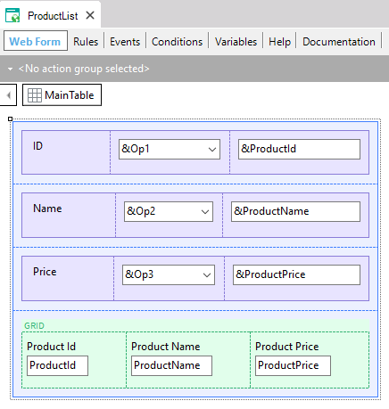
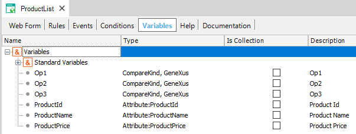
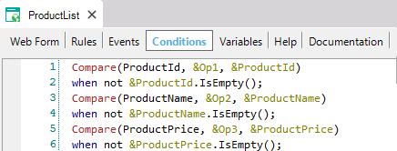

Compares two values using the indicated operator ('=', '>', '>=', '<', '<=', '<>', 'like') which can be dynamic (for example, entered by the end-user at runtime).
Compare(<value1>,<operator>,<value2>)
where:
<value1>: Is an attribute, variable or fixed value.
<operator>: Is a specific value of the predefined CompareKind Enumerated Domain.
<value2>: Is an attribute, variable or fixed value.
Type returned:
Boolean
Description
If you want to compare two values having the operator entered by the end-user at runtime, by using the Compare function, the code generated by GeneXus will be shorter than the result of defining:
&a>&b when &operator = '>';
&a<&b when &operator = '<';
&a=&b when &operator = '=';
Also, the generated code will be better because a SELECT string will be created including the corresponding operator.
CompareKind is a predefined Enumerated Domain, whose Enum Values are:
CompareKind
{
.Equal - '='
.Greater - '>'
.GreaterOrEqual -'>='
.Less - '<'
.LessOrEqual - '<='
.NotEqual -'<>'
.Like -'like'
}
You can use the function anywhere an expression is supported.
If the operator value entered by the end-user in runtime is not valid, then the value used is =.
Performing this construction in runtime is exactly the same as writing the operator in order to send the SQL statements to the DBMS.
The like operator only makes sense for Character types and their variants. If you use it for other data types it may give an error in execution according to whether the DBMS / version supports it or not.
Sample
Consider the following Transaction object:
Product
{
ProductId*
ProductName
ProductPrice
}
and the following Web Panel object whose Web Form, Variables and Conditions are shown below:



As shown, the end-user in runtime can select the &Op1, &Op2 and &Op3 values and the chosen operators are being taken into account to filter in the Conditions section.
This property is available since GeneXus 16 upgrade 1.
Platforms: Web(.Net, NetCore), Smart Devices(Android, Swift)
Data Stores: All DBMSs
|